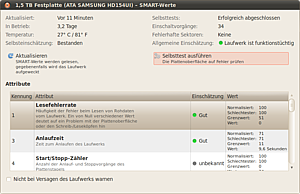

Laufwerksverwaltung
Dieser Artikel wurde für die folgenden Ubuntu-Versionen getestet:
Ubuntu 14.04 Trusty Tahr
Zum Verständnis dieses Artikels sind folgende Seiten hilfreich:
Die Laufwerksverwaltung (ehemaliger Programmname: Palimpsest) ist das grafische Standardprogramm von GNOME zum Verwalten von Laufwerken und Partitionen. Als Werkzeug zur Konfiguration aller internen und externen Datenträger erfüllt es mehrere Aufgaben:
Benennung
Anlegen eines Software-RAID
Auslesen des Festplattenstatus (S.M.A.R.T.)
Anlegen eines Live USB-Stick (Laufwerksabbild wiederherstellen)
Insbesondere für Linux-Einsteiger wird dadurch das Formatieren, Einbinden und Benennen externer Datenträger wie z.B. USB-Sticks sowie das Verschlüsseln von bestehenden oder neuen Laufwerken erheblich vereinfacht.
Achtung!
Das Programm sollte nur mit äußerster Vorsicht genutzt werden! Falsche oder unbedachte Einstellungen können zum Datenverlust führen oder das System irreversibel beschädigen! Vor der Neupartitionierung einer Festplatte sollte unbedingt eine Datensicherung aller wichtigen Daten erfolgen!
Installation¶
Falls noch nicht vorhanden, kann das Programm über folgendes Paket installiert werden [1]:
gnome-disk-utility
 mit apturl
mit apturl
Paketliste zum Kopieren:
sudo apt-get install gnome-disk-utility
sudo aptitude install gnome-disk-utility
Benutzung¶
Hinweis:
Je nach Ubuntu-Version und -Variante können die in dieser Beschreibung aufgeführten Bezeichnungen/Benennungen abweichen!
Die Laufwerksverwaltung befindet sich bei Ubuntu-Varianten mit einem Anwendungsmenü unter "System -> Laufwerke" oder "Einstellungen -> Laufwerksverwaltung". Unter Unity wird sie über und die Eingabe von "Laufwerksverwaltung" bzw. "Laufwerke" gestartet, auf der Kommandozeile mit dem Befehl gnome-disks.
Datenträger-Informationen¶
Wenn man das Programm gestartet hat, erscheint ein Fenster, welches sich in zwei Spalten teilt. In der Geräteliste (linke Fensterhälfte) findet man eine Auflistung der angeschlossenen, eingebauten und peripher (extern) angeschlossenen Geräte, nach Anbindung ("Controller", "USB") untergliedert. Die jeweilige Bezeichnung und Speicherkapazität sind mit angegeben.
Sobald man eines der Geräte anklickt, erscheinen im Informationsfeld (rechte Fensterhälfte) alle verfügbaren Informationen zu dem ausgewähltem Datenträger/Gerät, jeweils unterteilt in
Laufwerksinformationen und
Datenträgerinformationen (Informationen zur Partition, Format etc.)
Je nachdem, ob es sich um Festplatten, CDs oder DVDs handelt, erhält man etwas unterschiedliche Informationen:
| Laufwerk | |
| Info | Beispielangabe |
| Modell | ATA xxx |
| Firmware Version | 1AGxxxx |
| Ort | Port X von SATA Host Adapter |
| Schreibpuffer | Eingeschaltet |
| Kapazität | 1,5 TB (1.500.299.265.024 Bytes) |
| Partitionierung | Master Boot Record |
| Seriennummer | 0815xxxx |
| Weltweiter Name | 0x500xxxx |
| Gerät | /dev/sd... |
| Drehgeschwindigkeit | 5400 RPM |
| Verbindung | ATA |
| SMART-Status | Laufwerk ist funktionstüchtig |
An Funktionen stehen hier zur Verfügung:
Medium öffnen
Medium auswerfen (bitte nur bei externen Laufwerken!)
Vergleichstest (Laufwerksleistung messen)
Laufwerk formatieren
SMART-Werte anzeigen (Achtung: Genaue SMART Dateninterpretation ist gerätetyp-abhängig, siehe smartctl)
| Datenträger | |
| Info | Beispielangabe |
| Aufruf | Dateisystem |
| Partitionstyp | Linux (0x83) |
| Partitions-Flag | bootfähig |
| Typ | Ext4 (Version 1.0) |
| Bezeichnung | abcde |
| Gerät | /dev/sdaN (N=Zahl) |
| Partitionierungsbezeichnung | abcde |
| Kapazität | 1.5 TB (1.500.299.265.024 Bytes) |
| Verfügbar | - |
| Einhängepunkt | Eingehängt in / |
An Funktionen stehen zur Verfügung:
Datenträger überprüfen
Datenträger aushängen
Datenträger formatieren
Dateisystembezeichnung ändern
Partition bearbeiten
Partition löschen
Die Aufteilung (Partitionierung) des Datenträgers wird grafisch angezeigt.
SMART-Werte¶
|  |
| S.M.A.R.T.-Status |
S.M.A.R.T. ist die Abkürzung für Self-Monitoring, Analysis and Reporting Technology. Hierbei handelt es sich um eine Selbstüberwachungstechnik, die von allen modernen Festplatten beherrscht wird. Man sollte allerdings darauf achten, dass S.M.A.R.T. nicht im BIOS deaktiviert wurde.
Die Werte (RAW_VALUE) geben die aktuellen Daten der Platte an, welche den Grenzwert (TRESH) nicht über- bzw. unterschreiten sollen (je nach Wert). Ein grünes Lämpchen ist ein gutes Zeichen.
Es öffnet sich ein Fenster, in welchem
Betriebsdauer
Anzahl der Einschaltvorgängen
Temperatur
Zahl fehlerhafter Sektoren
Selbsteinschätzung grün/gelb/rot
sowie zahlreiche Attribute aufgelistet werden. Einzelheiten zu den diversen SMART-Meldungen liefert das Programm in Form von Tooltipps. Eine genauere Erklärung der Parameter findet man z.B. unter Übliche Parameter in der deutschen Ausgabe der Wikipedia.
Hinweis:
Die genaue SMART-Dateninterpretation ist geräteabhängig und die in der Laufwerksverwaltung angezeigten generellen Texte können für manche Geräte unzutreffend sein. SMART-Daten sind mit dem Kommandozeilenprogramm smartctl – ggf. nach Update der Gerätedatenbank – im Detail besser interpretierbar.
Vergleichstest¶
Hier kann man zwischen "nur lesend" oder "Lese- und Schreibvergleichstest" wählen. Ersteres ergibt neben einer grafischen Darstellung die mittlere, kleinste und größte Lesegeschwindigkeit und die mittlere Zugriffszeit. Für den Lese- und Schreibvergleichstest muss der Datenträger komplett leer sein, darf also keine Partitionstabelle enthalten! Das ist normalerweise nur bei fabrikneuen Laufwerken der Fall.
Hinweis:
Für die vier nächsten Funktionen darf der jeweilige Datenträger nicht eingehängt sein, sonst erhält man eine Fehlermeldung. Aber bitte nicht Aushängen mit Auswerfen verwechseln, denn dann ist er gar nicht mehr erreichbar.
Laufwerk formatieren¶
Nach dem Aushängen ist ein Schema auszuwählen. Hier ist "Master Boot Record" bei älteren Geräten richtig, während bei neueren bzw. größer als 2 TiB eine "GUID-Partitionstabelle" die bessere Wahl ist. Danach ist der Datenträger leer und enthält keine Partition. Er wird also nicht formatiert.
Partition erstellen / Datenträger formatieren¶
Nach dem im Hinweis beschriebenen Aushängen ist der Typ des Dateisystems auszuwählen. USB-Sticks verwenden meistens FAT bzw. FAT32, das problemlos auch unter Mac OS X und Windows gelesen werden kann. Weitere Informationen im Artikel Formatieren.
Dateisystem überprüfen¶
Nur noch mit der in Ubuntu 12.04 enthaltenen Version des Programms kann man das jeweilige Dateisystem überprüfen. Im Idealfall erhält man die Mitteilung:
"Datenträger ist sauber."
Ansonsten hilft – bei internen Festplatten – ein Neustart, bei dem automatisch Routinen zur Laufwerksüberprüfung ausgeführt werden.
Datenträger umbenennen¶
Um die Bezeichnung (Label) eines Datenträgers zu ändern, wählt man ihn links in der Auflistung aus und klickt auf "Bezeichnung ändern -> Change".
Partitionen erstellen¶
Erst nachdem eine Partition gelöscht und als nicht zugeteilter Platz markiert ist, bietet die Laufwerksverwaltung die Möglichkeit, eine neue Partition mit den Dateisystemen ext2, ext3, ext4, swap, FAT(32) oder NTFS zu formatieren. Eine Erläuterung und Hintergründe zu den verschiedenen Dateisystemen befindet sich im Artikel Dateisysteme.
Festplattenfehler suchen¶
Hierzu eignet sich das bereits in der Standardinstallation enthaltene Kommandozeilenprogramm badblocks, welches eine Festplatte oder Partition nach defekten Datenblöcken durchsucht. Um eine Festplatte zu überprüfen, auf der sich noch Daten befinden, empfiehlt sich der "nicht-überschreibende" Modus:
sudo badblocks -vsn /dev/sda
Da es passieren kann, dass ein Datenträger zwar noch gelesen, aber nicht mehr geschrieben werden kann, gibt es noch die Option -w ("überschreibender Modus"). Aber Vorsicht: betroffene Datenbereiche werden als defekt markiert und stehen anschließend nicht mehr zur Verfügung - enthaltene Daten sind verloren.
Laufwerksabbild wiederherstellen¶
Unter diesem Menüpunkt kann man u.a. schnell und sicher einen USB-Stick mit einer beliebigen ISO-Datei beschreiben und diesen anschließend als USB Live-System benutzen. Anstatt im Terminal [2] mit dd zu arbeiten, kann man diese Arbeiten auch grafisch wie folgt ausführen:
Man öffnet die Laufwerksverwaltung
Man steckt den USB-Stick in den Rechner ein
Noch vorhandene Daten sollte man jetzt extern sichern
Oben links unter "Geräte" den USB-Stick auswählen
Das Dateisystem unterhalb der Partition mittels der Schaltfläche "Stop" auswerfen
Aber nicht oben rechts das Medium auswerfen!
Oben rechts mit der linken Maustaste
 auf die Schaltfläche "Option" (Zahnrad) klicken
auf die Schaltfläche "Option" (Zahnrad) klicken"Laufwerksabbild wiederherstellen" mit der linken Maustaste
auswählen
Mit dem Ordner-Symbol wählt man ein "Abbild zur Wiederherstellung" aus
Die angezeigten Parameter jetzt sorgfältig überprüfen
"Wiederherstellung starten"
Passwort in die Abfragemaske eingeben
Nach Abschluss der Übertragung kann man den USB-Stick von Rechner entfernen
Dieser USB-Stick entspricht einer DVD/CD und kann nur als Live-System benutzt werden - Änderungen kann man ebenfalls nur in den jeweiligen Bootmenüs einbringen.
Im BIOS-Modus in die Bootzeile mit der F6 -Taste
Im EFI-Modus durch Editieren des GRUB 2-Menü mit der E -Taste
Problembehebung¶
Laufwerk könnte versagen¶
Bei dieser Selbsteinschätzung des Laufwerkes unter Zugrundelegen der SMART-Daten erscheint sowohl diese Meldung beim SMART-Status als auch ein gelbes Warnlicht über den Benachrichtigungsdienst.
Eventuell droht wirklich ein baldiges Versagen der Festplatte oder die Warnung ist unberechtigt, beispielsweise weil das Dateisystem Informationen zeitversetzt schreibt. Meist genügt ein Vergleichstest, um – für einige Zeit – den Warnstatus wieder auf „grün“ zu setzen. Unter Umständen ist ein Festplattentausch oder eine Neupartitionierung besser geeignet, um das Problem zu beseitigen.
SMART-Daten werden nicht angezeigt¶
Im Regelfalle werden SMART-Werte nur für Festplatten angezeigt. Für CD-/DVD-Laufwerke und externe Speichermedien wie via USB angeschlossene Festplatten, USB-Sticks oder SD-Karten steht diese Funktion nicht zur Verfügung.
GSmartControl¶
Als Alternative zur Prüfung des SMART-Status kann das Programm GSmartControl  , eine grafische Oberfläche für smartctl, genutzt werden. Weitere Informationen finden sich im Artikel Festplattenstatus.
, eine grafische Oberfläche für smartctl, genutzt werden. Weitere Informationen finden sich im Artikel Festplattenstatus.
Links¶
Intern¶
Notfall
 Was tun in Notfällen?
Was tun in Notfällen? Festplattenstatus – Das S.M.A.R.T.-Diagnosesystem
Datensicherung – Wie der Name sagt: Alles zum Thema Datensicheung
Festplatten Problembehebung – Bei Fehlern im Dateisystem oder auf den Partitionen
Datenrettung – Gelöschte Dateien wiederherstellen sowie Daten von beschädigten Partitionen retten
Dateisysteme und Datenträger
Übersicht über weitere Artikel zum ThemaLive-USB - Ein Livesystem auf einem USB-Stick erstellen
- Erstellt mit Inyoka
-
 2004 – 2017 ubuntuusers.de • Einige Rechte vorbehalten
2004 – 2017 ubuntuusers.de • Einige Rechte vorbehalten
Lizenz • Kontakt • Datenschutz • Impressum • Serverstatus -
Serverhousing gespendet von